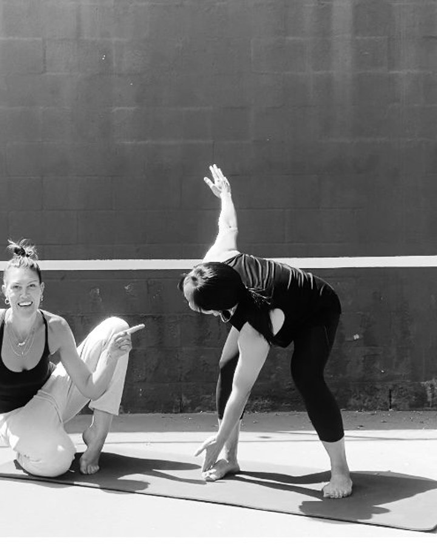
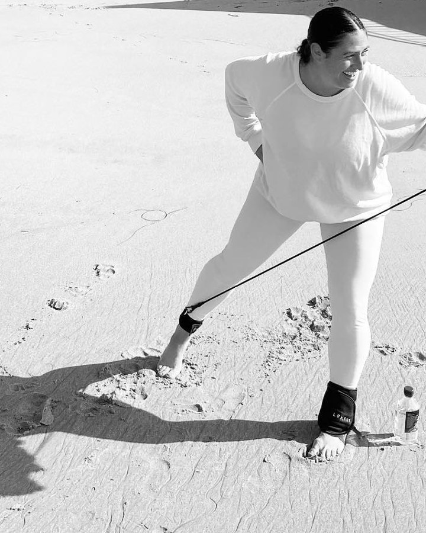
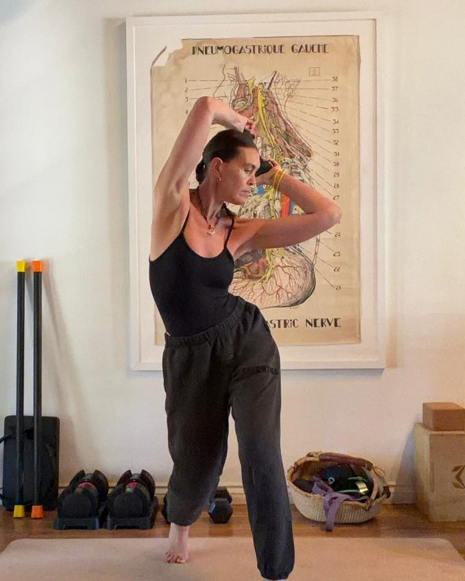

One to one
Private Sessions


Real time
Live Sessions


Anytime
On-Demand

SamSation is a practice built around how bodies actually move in life, not in a gym.
About the practiceThe Patterns
of Daily Life
Step
Hinge
Rotate
Reach
Shift

Retreats · First access
Greece · Fall 2026 · A small group, by the sea.
Library · Listen Up
Music moves
Music moves
everything for me.
It shapes how I feel, how I teach, how I move. These playlists are pieces of that rhythm.